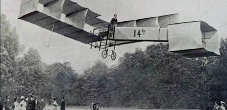
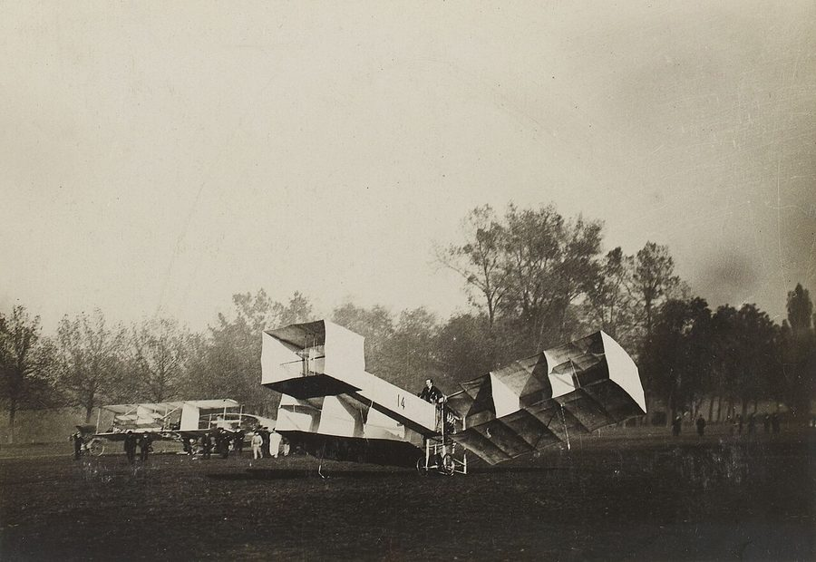
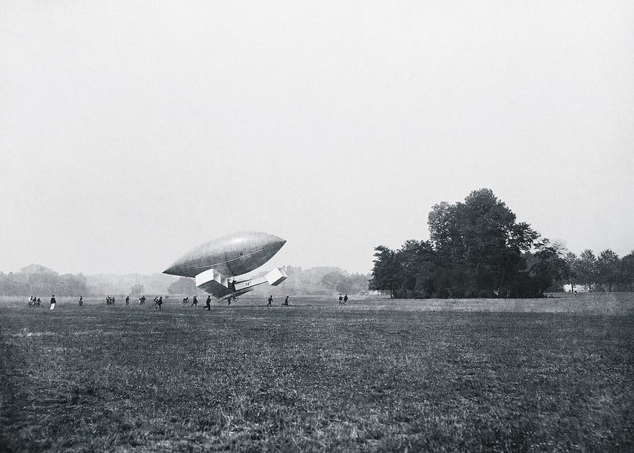
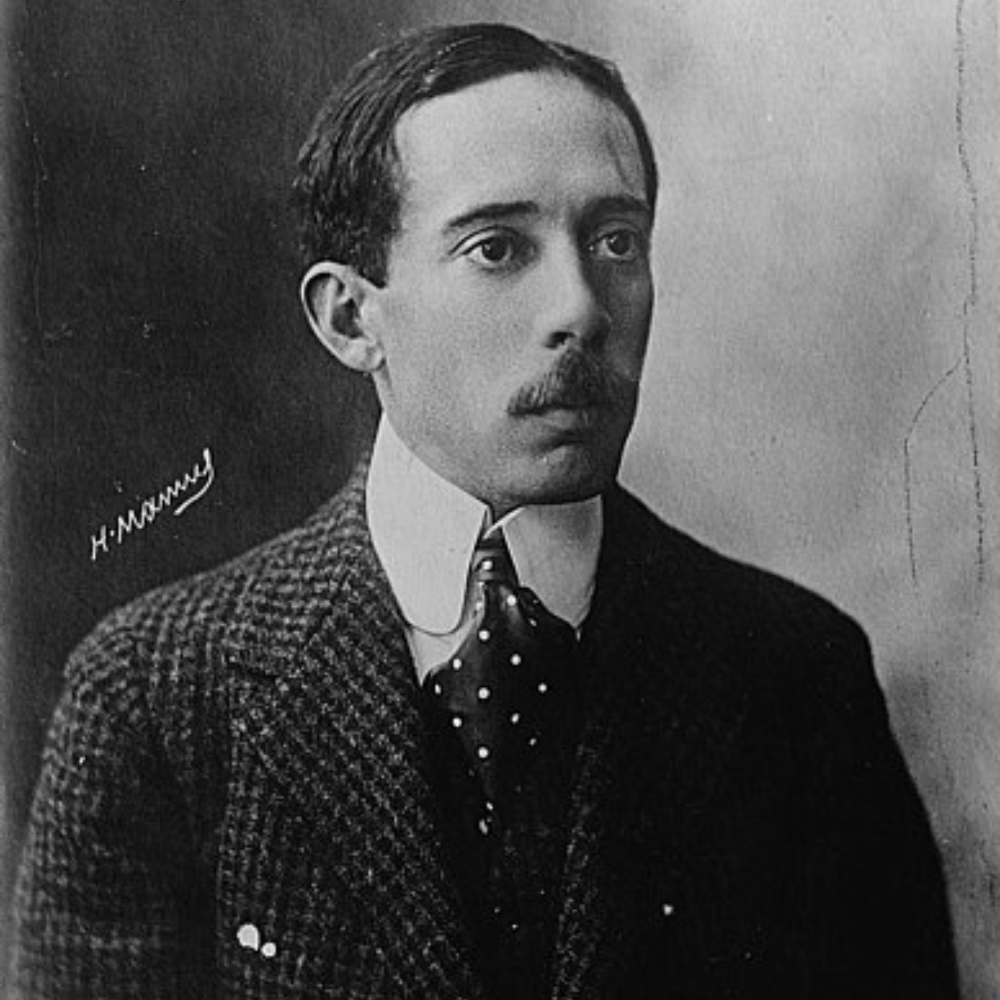
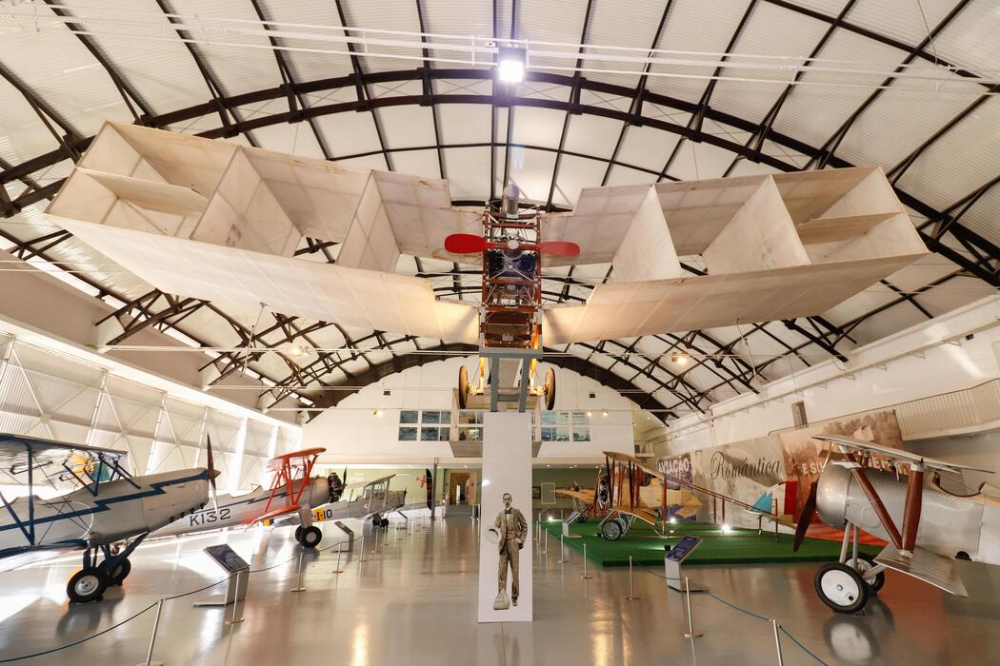
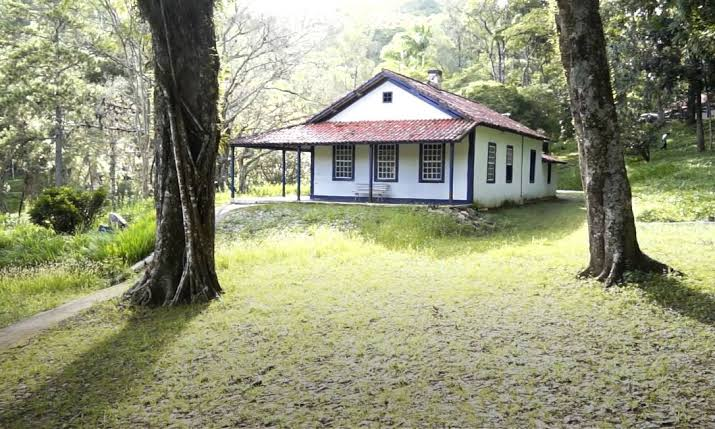

O 14 Bis, construído pelo brasileiro Alberto Santos Dumont, é um dos principais símbolos da história da aviação. Em 23 de outubro de 1906, no campo de Bagatelle, em Paris, a aeronave conseguiu voar cerca de 60 metros, a poucos metros do chão, diante de uma grande multidão e de fiscais do Aeroclube da França. Poucas semanas depois, em 12 de novembro de 1906, Santos Dumont realizou um novo voo, percorrendo 220 metros em 21,5 segundos e estabelecendo um recorde mundial de voo reconhecido na época. O feito chamou atenção porque o avião conseguiu decolar usando apenas a força do próprio motor, sobre rodas e em terreno plano, sem trilhos, catapultas ou outros mecanismos externos. O nome 14 Bis surgiu dos primeiros testes da aeronave. Santos Dumont chegou a pendurá-la em seu dirigível nº 14 para observar seu equilíbrio e comportamento no ar. Por isso, o avião passou a ser conhecido como 14 Bis. Até hoje, sua história é lembrada como um importante marco da participação brasileira no desenvolvimento da aviação.





